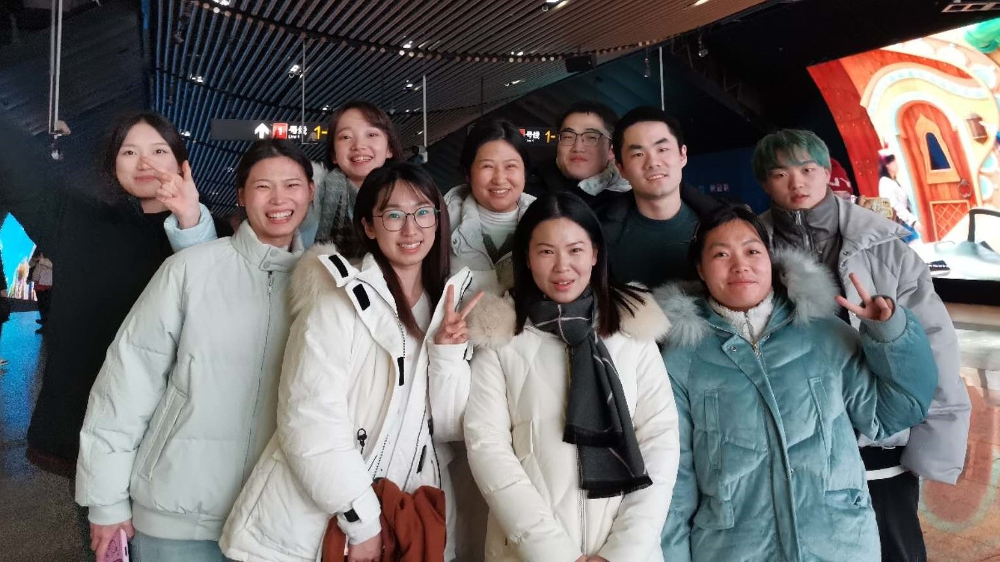
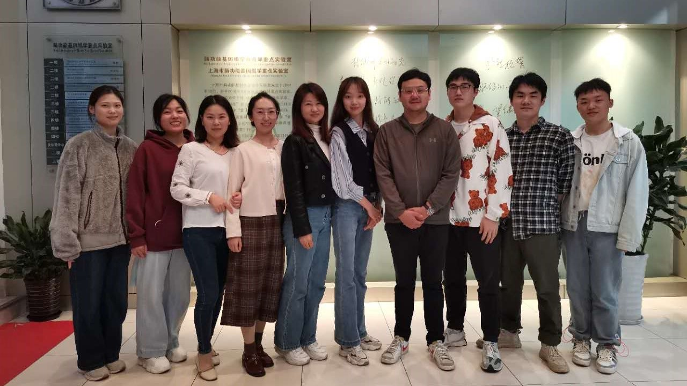
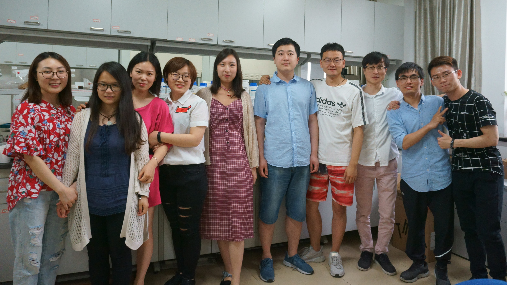

Dr. Xiaoming Zhou (Professor of Neurobiology)
Xiaoming is a Principal Investigator at the Key Laboratory of Brain Functional Genomics of Ministry of Education, East China Normal University (ECNU), and a faculty member of the NYU-ECNU Institute of Brain and Cognitive Science at NYU Shanghai. Xiaoming received his B.S. in Biology and Ph.D. in Physiology from ECNU in 1992 and 1998, respectively. After postdoctoral research at the University of Missouri at Columbia, he started his laboratory at ECNU in 2005.
Ye Shan, M.S.
Lab Manager
Guimin Zhang, Ph.D.
Postdoctoral Scholar
Yutian Sun
Graduate Student
Pengying An
Graduate Student
Yue Fang
Graduate Student
Hui Liu
Graduate Student
Yongjian Cai
Graduate Student
Wenjing Yang
Graduate Student
Yiran Liu
Graduate Student
Zhou lab members and alumni (May 2024).
Zhou lab members and alumni (December 2023).
Zhou lab members and alumni (October 2022).
Zhou lab members and alumni (June 2018).